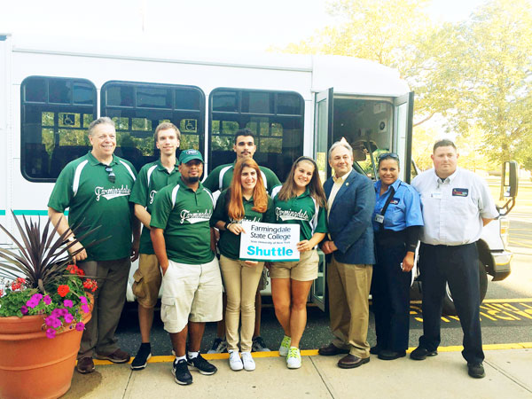
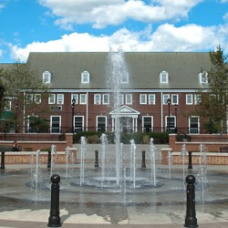
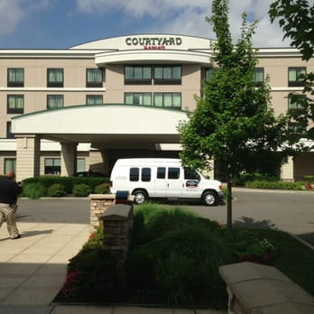

Farmingdale State College is now offering the RAM Shuttle for the FSC community.
This courtesy shuttle starts the first day of classes and continues through finals
(8/28/17 to 12/19/17).
The shuttle is available during the Fall and Spring semesters.
The shuttle is wheelchair accessible and will pick up all riders at the front of Laffin
Hall and take them to the LIRR station in the Village of Farmingdale and to the Aviation
Center. The shuttle will also pick up those members of the FSC community travelling
to the LIRR station and bring them to campus and the Aviation Center.
The shuttle is open to all students, faculty, staff and alumni Mondays through Friday.
If the campus is closed or classes are canceled, the shuttle will not operate. In
the event of unusual circumstances or extreme weather, please call 631-420-2103 to
check on the status of the shuttle.



Eastbound
From New York, Brooklyn, Jamaica
Monday-Friday except holidays
Notes
Leave
Arrive
Penn Station
Atlantic Terminal
Jamaica
Bethpage
Farmingdale
Morning Service
6:07
J 5:51
6:26
6:54
A 7:00
7:39
J 7:41
8:01
......
8:35
8:14
J 8:04
8:36
9:05
9:10
9:14
J 8:04
J 9:05
10:05
10:10
10:14
J 10:05
10:36
11:05
11:10
Afternoon & Evening Service
12:14
J 12:05
12:36
1:05
1:10
1:14
J 1:05
1:36
2:05
2:10
2:14
J 2:05
2:36
3:05
3:10
3:14
J 3:05
3:36
4:01
4:06
3:55
J 3:56
4:17
4:44
4:49
Westbound
To New York, Brooklyn, Jamaica
Monday-Friday except holidays
Notes
Leave
Arrive
Farmingdale
Bethpage
Jamaica
Atlantic Terminal
Penn Station
Morning Service
B 7:22
B 7:27
7:54
8:17
J 8:20
B 7:27
B 7:31
......
......
8:19
B 7:58
......
8:26
J 8:51
8:47
8:56
9:01
9:34
J 9:56
9:56
9:43
9:48
10:15
J 11:03
10:37
10:39
10:44
11:11
J 11:33
11:33
11:16
11:21
11:54
J 12:33
12:15
Afternoon & Evening Service
1:39
1:44
2:11
J 2:33
2:33
2:39
2:44
3:11
J 3:33
3:33
3:39
3:44
4:12
J 4:34
4:34
4:38
4:43
5:08
J 5:35
5:38
5:14
5:19
5:46
J 6:06
6:08
FAQS
The Farmingdale LIRR station is about 2.2 miles from Farmingdale State College. Take a taxi from the station or the N70 bus on Conklin Street to campus
Five bus routes run by Nassau County Inter-County Express (NICE) and Suffolk County Transit directly connect Farmingdale State College to 24 communities in Nassau and
Suffolk. Following is a list of these routes and the communities served.
Route
Servicing
SI
Amityville LIRR, North Amityville, East Farmingdale, SUNY Farmingdale, Melville, South Huntington, Walt Whitman Mall, Huntington, Halesite
N70
Hempstead Transit Center, Hempstead, Uniondale, East Meadow, Levittown, Plainedge,
Farmingdale, Melville
S2B
SUNY Farmingdale, Wheatley Heights, Wyandanch, Deer Park, North Babylon, South Shore Mall, Bay Shore
S31
Copiague, North Amityville, East Farmingdale, Farmingdale, Melville, Pinelawn, Northwest Babylon
Suffolk Clipper
LIE Exit 63 Park & Ride, Farmingville, LIE Exit 58 Park & Ride, Islandia, Hauppauge
Industrial Park, Route II 0 Corridor, SUNY Farmingdale
The main campus bus stop is near Horton Hall - The Administration Building.
Get the latest LIRR and MTA transit information including maps, schedules, fares and point to point transit directions at www.mta.info. NICE bus schedules and maps are available at www.nicebus.com. Suffolk County Transit bus schedules and maps are available at www.sct-bus.org.
Get the latest MTA transit information including maps, schedules, fares and point to point transit directions at www.mta.info. In addition, a tri-state transit trip planner is available at www.NY511.org. Google Maps also provides point to point transit directions.
A list of transit apps is available at the MTA Apps Center at www.mta.info/apps/